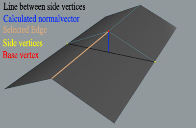
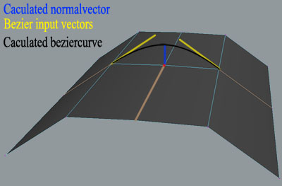

Open Maya Toolbox Documentation.
Latest release news: 0.5.1
- Removed spyware'ish java tracker from this html doc
- Fixed the installer to take better care of write protected/network userSetup files
|
Last release news: 0.5.0
- fixed bug on linux in the select outline script
- rewrote the installer to take care of all cases I can think of in both linux and windows, and hopefully OSX as well.
- fixed GUI bug in linux which removed all content of the settings menu.
- added toggle save selection tool
- added x-ray toggle tool
- changed the select element procedure
- removed marking menu
- automated 'set deafults' from the settings menu
|
Get it going:
Get the files:
Fetch the toolbox from the listed download mirrors.
Download script
OMToolbox @ Alias.com
OMToolbox @ Sourceforge.net
The toolbox is seperated into a bunch of small files, each containing a tool.
The tools are all managed by the OMT_toolboxMenu.mel which checks the omtoolbox/scripts dir for mel files and arranges them into known files (starting with OMT_[something] and 'custom' files.
It then creates a list of the mel files in the omtoolbox -> Settings -> Tool Managing which makes you able to load/unload whatever tools you like to appear in your menu, and furthermore set the maya mode for which you want them to appear.
When placing your own custom tool files in the omtoolbox dir, beware that it only contains one actual tool and that it gets executed by typing it's filename in the command line
|
Installation:
First of all.. Unpack the zip file to a destination of your choice.
Open the "OMT_installer.mel" located in ".../omtoolbox/installer" in Maya and copy/paste the absolute path to where you have placed the omtoolbox dir into the field and click next.
If you cant see any issues regarding what the installer says that it is about to do, click "Install" and the OMToolbox menu should appear in your main menu.
If the installer fails, the procedure gets a bit more complicated.
Start by placing the .../omtoolbox/installer/preMade/OMToolbox.module in your /home/maya/x.x/modules (if you havn't got this directory, create one), open the file with your favorite editor and remove the "///" in front of the line matching your OS.
Edit the path to point at your omtoolbox dir.
If you are using a userSetup.mel file (usually located in your .../maya/x.x/scripts dir), open it and copy/paste the content of .../omtoolbox/installer/preMade/userSetup.txt into it. Save and start Maya.
Else simply rename .../omtoolbox/installer/preMade/userSetup.txt to userSetup.mel or copy the content into a new userSetup.mel file and place it in any scripts dir (omtoolbox/script ; home/maya/x.x/scripts ; home/maya/scripts)
When all of this is done, you should have omtoolbox on your menu in Maya (if not, mail someone and ask for help).
If no bugs were encountered, you should be set and ready to go. Have fun.
|
Tools:
Download Techsmith video codec
Menu System:
Jakob Welner, v 1.6
Manages the toolbox tools in a menu.
Loads all .mel files located in the omtoolbox/scripts dir into a GUI [settings] and lets you load/unload
tools into the menu and select for which maya mode the different tools should appear in the menu.
To use your own custom tool with the menu system, make sure that the tool gets executed by a string matching the filename (without ".mel).
Place your tool in the omtoolbox/scripts dir and load it from the settings window.
|
Save Selection Toggle:
Jakob Welner, v 1.10
Saves component selections and reloads them once returning to the same component mode.
Works with polygonal and subDiv meshes.
|
Save Selection sample video
|
X-Ray Toggle:
Jonathan Perry, v 1.00
Select Loop:
Jakob Welner, v 1.01
Select Outline:
Henry Korol, v 1.21
Select Ring:
Jakob Welner, v 1.01
Select Element:
Jakob Welner, v 1.00
|
Selects all geometry which has adjacent faces/edges/vertices, so that several combined geometries where the vertices hasn't been merged can be selected individually.
|
Select Element sample video
|
Scale Position:
Jakob Welner, v 1.00
Connect Components:
Jakob Welner, v 0.50
Extrude Components:
Jakob Welner, v 1.00
|
Extrudes selected component.
|
|
Selection Dragger:
Jakob Welner, v 1.00
Enables you to slide the current poly edge selection sideways and along 3 different normals by dragging with MMB and LMB.
|
Selection Dragger sample video
|
Spin Edge:
Geoff Wedig, v 0.1a
Spins selected edge or the adjacent edge on two selected faces one vertex counter clockwise.
|
Spin Edge sample video
|
Split Around Selected:
Jakob Welner, v 0.50
Split Loop:
Jakob Welner, v 0.50
creates one or several loops / partial loops from a poly edge selection and enabled the selection dragger on the new edge(s).
|
Split Loop sample video
|
* dragSlider * :
- Cursor: Track
- slide using MMB / LMB for sideways/normal slide.
- ctrl + MMB / LMB to adjust the multiplier
- shift + LMB at loopSplit snaps to smooth/noSmooth
- shift + MMB / LMB to snap to 10%
- 'q' to quit tool
|
* Partial * :
Executes procedure only between two selections:
Supported by loopSplit, ring-/loop-select
|
*Normal vector calculations* :
- Projection: The projection option is calculated using vector projections as shown to the right.
from er vertex point of view where the forward direction is defined by the selected edge you want to move,
it uses the shortest distance from the vertex to the line going from the left verte to the right one.
This makes it unusable in normal sliding after a split as the distance from the new vertex to the line would be zero
|

|
- Flow Dependent: This one uses bezier curves to get the normal vector.
It steps one edge to each sides of the vertex where it checks the flow of the planes and generates a vector which is used to the bezier calculations.
This makes it usable with splits but a bit more unstable as it checks on geometry not directly connected to the selection.
|

|
- Similar: This one uses Mayas own normal vectors that all have similar lengths which causes all the vertices to move with the same speed
|
|
|